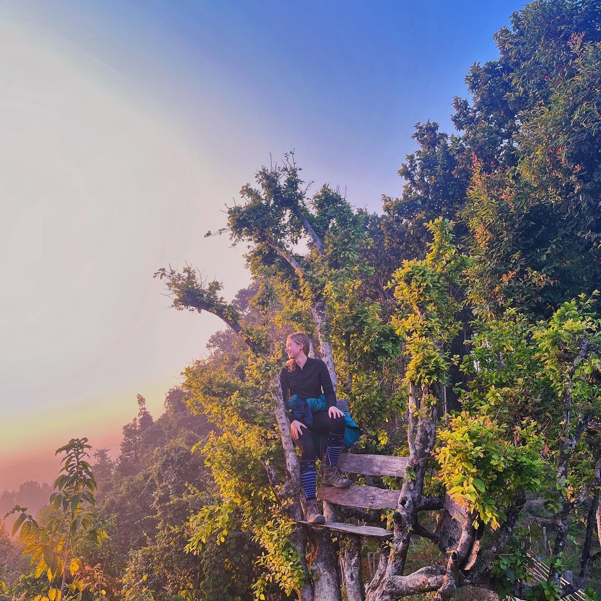

Alongside pursuing a medical career, I also create art. Creating art helps me shape the way I interpret my own experiences and the world around me, which I find especially critical as my life gets busier and more complex. In addition to creating paintings and poetry, I also care for an extensive plant collection, which feels like a creation of its own. Though you won't find plants in my website, you will find many art pieces inspired our often conflicted relationship with nature.
